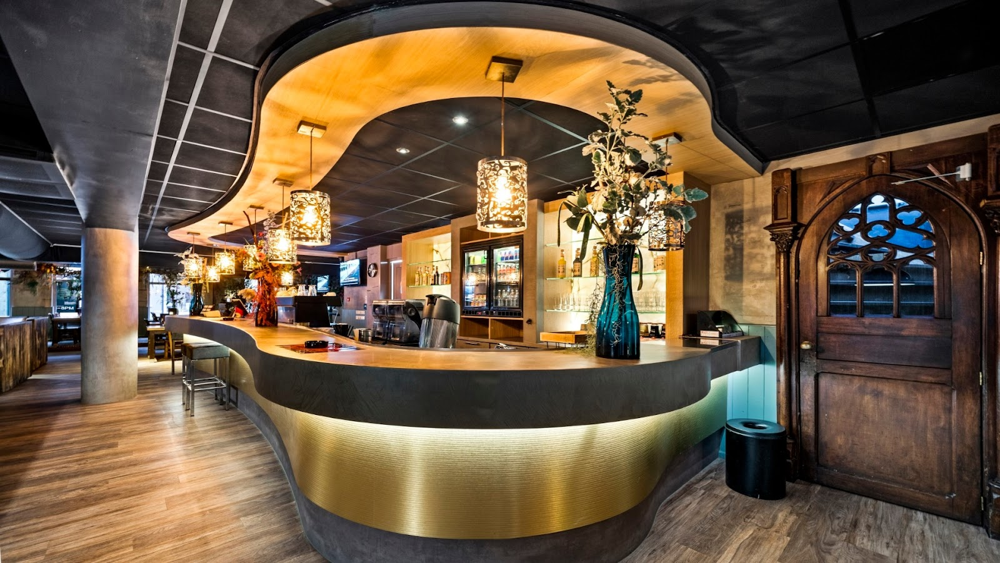
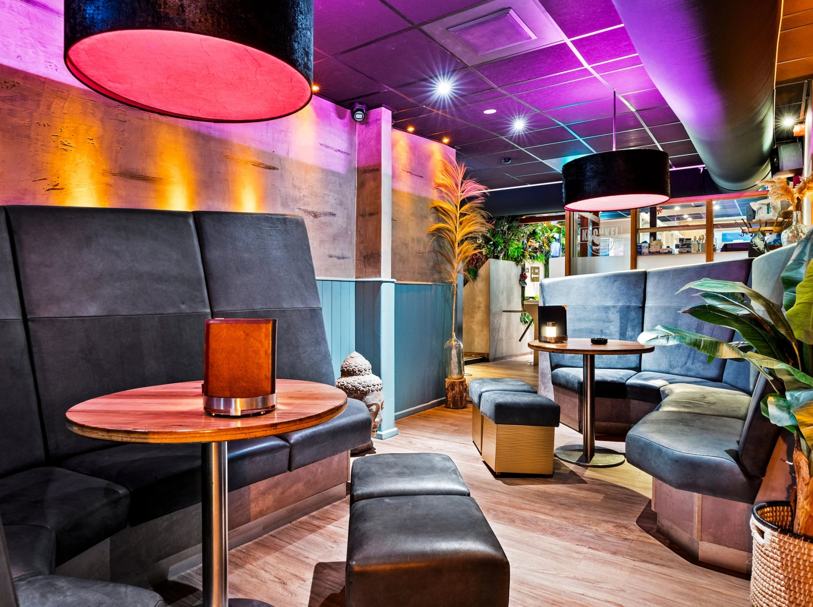
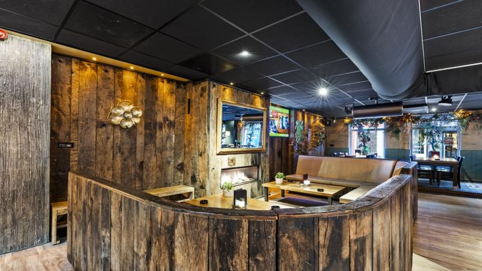
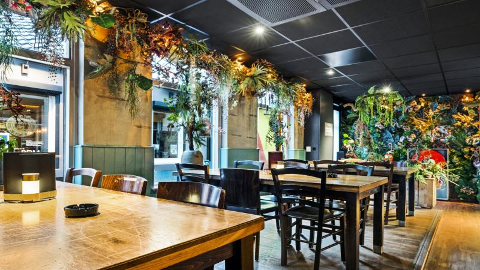
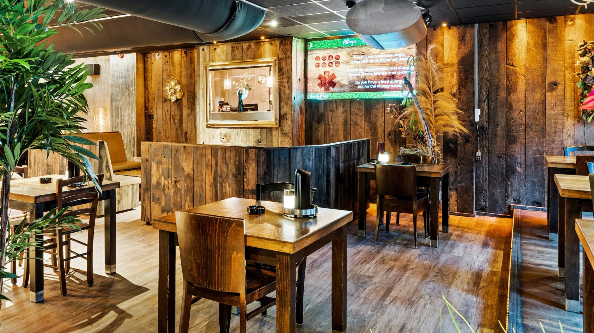
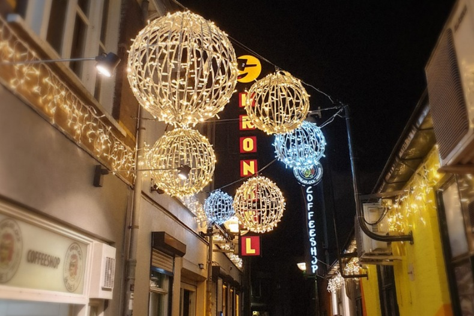

Coffeeshop in Nijmegen, sinds 1986
Thuiskomen in hartje Nijmegen.
Goede producten, heerlijke maaltijden en een ontspannen sfeer. Elke dag open tot één uur 's nachts.
4,6 sterren uit 1752 Google-reviews
Elke dag open
- Shop
- 09:00 tot 01:00
- Bar
- 11:00 tot 01:00
- Keuken
- 12:00 tot 22:00
Vlaamsegas 30
6511 HR Nijmegen

Zoek een plek uit en blijf nog even.
Kronkel is een shop, een bar en een keuken onder één dak. De kwaliteit staat voorop in alles wat we verkopen, van de rookwaren tot wat er uit onze keuken komt.
En er is altijd een plek die bij u past: diep in de bank, aan een lange tafel of bij de haard.


Wat onze gasten vinden: 4,6 sterren uit 1752 Google-reviews
“Beste coffeeshop van Nederland.
Lief personeel, deskundig advies. Ik zou het liefst elke dag hier zitten. Heerlijk eten en lekker verse milkshakes. Je kunt er fantastisch zitten. (...) Echt een avond uit.”
“Geweldige shop veel aanbod heel vriendelijk personeel knappe vrouw achter de balie leuke locatie mooie stad goeie prijzen niks op aan te merken”
“Fijne winkel vriendelijke medewerkers
Ruime keuze (...)”
“Snel geholpen, brede keuzes (...)”
Sinds 1986.
Kronkel kent een rijke geschiedenis. Al sinds 1986 is dit de shop waar u thuis kunt komen. Wat er in die jaren is gebeurd en veranderd, leest u terug in ons archief.
- Happen & Stappen review (1989)
- Brood op de Plank
- Gnoe tekeningen
- Bongify review
- High Tea Potcast
- David Rio Chai

Coffeeshop Sessions: rap in de huiskamer.
In de herfst van 2024 waren de leden van het Rafting Goods-collectief onze eregasten. Mensen kwamen uit het hele land voor een huiskamer-rapconcert in een coffeeshop. Was u er niet bij? We hebben de hele set opgenomen. De tweede pack bevat $KEER&BOO$ en Dookie.
Easy parking, easy going.
Komt u met de auto? Kies uw garage, klik op de route en loop rustig naar de Vlaamsegas.
-
3min lopen
Molenpoort P4
Route€4,- per uur, de hele dag
Let op: na 21:00 onbereikbaar door het inrijverbod op de Tweede Walstraat. Uitrijden kan wel.
-
7min lopen
Keizer Karel Parkeergarage
Route08:00 tot 18:00: €3,90 per uur
18:00 tot 08:00: €0,50 per uur
-
7min lopen
Mariënburg Parkeergarage
Route08:00 tot 18:00: €3,90 per uur
18:00 tot 08:00: €0,50 per uur
-
8min lopen
Wedren Parkeerterrein
Route€2,60 per uur, de hele dag
Let op: dagkaarten zijn niet meer beschikbaar.
-
10min lopen
Eiermarkt Parkeergarage
Route08:00 tot 18:00: €3,90 per uur
18:00 tot 08:00: €0,50 per uur
-
10min lopen
Gravendal
Route09:00 tot 23:00: €3,90 per uur
Op het Joris Ivensplein.
-
12min lopen
Kelfkensbos Parkeergarage
Route08:00 tot 18:00: €3,90 per uur
18:00 tot 08:00: €0,50 per uur

Kijk omhoog en u ziet ons.
Vlaamsegas 306511 HR Nijmegen Plan uw route
Op dit moment hebben we geen vacatures. Denkt u dat u ons team kunt versterken? Stuur gerust een open sollicitatie naar info@kronkel.nl.